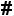
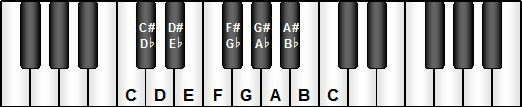

| The white keys on a piano correspond to the letter-named notes of the C Major scale. |
| The notes represented by the black keys are notated using the symbols for sharp
() or flat ( |
| These symbols are referred to as accidentals and have the effect of respectively raising or lowering a given pitch by a half step. |
| Equivalent notes, such as A |
|  |
Return to music theory.